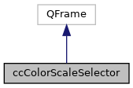
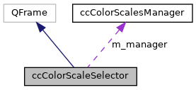

|
ACloudViewer
3.9.4
A Modern Library for 3D Data Processing
|
|
ACloudViewer
3.9.4
A Modern Library for 3D Data Processing
|
Advanced editor for color scales. More...
#include <ecvColorScaleSelector.h>


Signals | |
| void | colorScaleSelected (int) |
| Signal emitted when a color scale is selected. More... | |
| void | colorScaleEditorSummoned () |
Public Member Functions | |
| ccColorScaleSelector (ccColorScalesManager *manager, QWidget *parent, QString defaultButtonIconPath=QString()) | |
| Default constructor. More... | |
| void | init () |
| Inits selector with the Color Scales Manager. More... | |
| void | setSelectedScale (QString uuid) |
| Sets selected combo box item (scale) by UUID. More... | |
| ccColorScale::Shared | getSelectedScale () const |
| Returns currently selected color scale. More... | |
| ccColorScale::Shared | getScale (int index) const |
| Returns a given color scale by index. More... | |
Protected Attributes | |
| ccColorScalesManager * | m_manager |
| Color scales manager. More... | |
| QComboBox * | m_comboBox |
| Color scales combo-box. More... | |
| QToolButton * | m_button |
| Spawn color scale editor button. More... | |
Advanced editor for color scales.
Combo-box + shortcut to color scale editor
Definition at line 23 of file ecvColorScaleSelector.h.
| ccColorScaleSelector::ccColorScaleSelector | ( | ccColorScalesManager * | manager, |
| QWidget * | parent, | ||
| QString | defaultButtonIconPath = QString() |
||
| ) |
Default constructor.
Definition at line 18 of file ecvColorScaleSelector.cpp.
References m_button, m_comboBox, m_manager, and cloudViewer::core::Maximum().
|
signal |
Signal emitted when the user clicks on the 'Spawn Color scale editor' button
Referenced by ccPropertiesTreeDelegate::createEditor(), and init().
|
signal |
Signal emitted when a color scale is selected.
Referenced by ccPropertiesTreeDelegate::createEditor(), init(), and setSelectedScale().
| ccColorScale::Shared ccColorScaleSelector::getScale | ( | int | index | ) | const |
Returns a given color scale by index.
Definition at line 83 of file ecvColorScaleSelector.cpp.
References ccColorScalesManager::getScale(), m_comboBox, and m_manager.
Referenced by getSelectedScale().
| ccColorScale::Shared ccColorScaleSelector::getSelectedScale | ( | ) | const |
Returns currently selected color scale.
Definition at line 79 of file ecvColorScaleSelector.cpp.
References getScale(), and m_comboBox.
Referenced by StereogramDialog::colorScaleChanged(), DistanceMapGenerationDlg::colorScaleChanged(), DistanceMapGenerationDlg::exportMapAsCloud(), DistanceMapGenerationDlg::exportMapAsMesh(), DistanceMapGenerationDlg::saveToPersistentSettings(), StereogramDialog::spawnColorScaleEditor(), DistanceMapGenerationDlg::spawnColorScaleEditor(), DistanceMapGenerationDlg::update(), and DistanceMapGenerationDlg::updateMapTexture().
| void ccColorScaleSelector::init | ( | ) |
Inits selector with the Color Scales Manager.
Definition at line 44 of file ecvColorScaleSelector.cpp.
References colorScaleEditorSummoned(), colorScaleSelected(), m_button, m_comboBox, m_manager, and ccColorScalesManager::map().
Referenced by ccPropertiesTreeDelegate::createEditor(), DistanceMapGenerationDlg::DistanceMapGenerationDlg(), StereogramDialog::spawnColorScaleEditor(), DistanceMapGenerationDlg::spawnColorScaleEditor(), and StereogramDialog::StereogramDialog().
| void ccColorScaleSelector::setSelectedScale | ( | QString | uuid | ) |
Sets selected combo box item (scale) by UUID.
Definition at line 93 of file ecvColorScaleSelector.cpp.
References colorScaleSelected(), and m_comboBox.
Referenced by DistanceMapGenerationDlg::DistanceMapGenerationDlg(), DistanceMapGenerationDlg::initFromPersistentSettings(), ccPropertiesTreeDelegate::setEditorData(), StereogramDialog::spawnColorScaleEditor(), DistanceMapGenerationDlg::spawnColorScaleEditor(), and StereogramDialog::StereogramDialog().
|
protected |
Spawn color scale editor button.
Definition at line 61 of file ecvColorScaleSelector.h.
Referenced by ccColorScaleSelector(), and init().
|
protected |
Color scales combo-box.
Definition at line 58 of file ecvColorScaleSelector.h.
Referenced by ccColorScaleSelector(), getScale(), getSelectedScale(), init(), and setSelectedScale().
|
protected |
Color scales manager.
Definition at line 55 of file ecvColorScaleSelector.h.
Referenced by ccColorScaleSelector(), getScale(), and init().